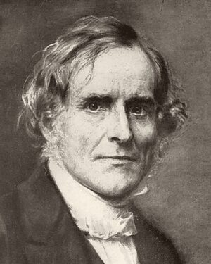

The works of
Frederick Denison Maurice
1805 1872
Priest, theologian and teacher; chaplain of Lincoln's Inn, founder of the Working Men's College, and one of the most searching religious thinkers of Victorian England. His books are gathered here in careful new editions, free to read, download, and hear.
14 volumes · 1,530,000 words
The world is the Church without God; the Church is the world restored to its relation with God, taken back by Him into the state for which He created it.
The Library
Each book is transcribed from a printed edition and checked page by page against the scan, keeping Maurice's own spelling, punctuation and emphasis.
Theology
The books in which Maurice set out his account of the Church, revelation, and the Christian faith.
The Kingdom of Christ
Volume I
First published 1838
Maurice's greatest work: an open letter to a Quaker on the Church as a universal and spiritual society.
Read online · EPUB · Audio
The Kingdom of Christ
Volume II
First published 1838
The creeds, worship, the Eucharist, the ministry and the Scriptures; the Church and nations; the English Church.
Read online · EPUB · Audio
The Religions of the World and Their Relations to Christianity
First published 1847
Boyle Lectures on Islam, Hinduism, Buddhism and the religions of the ancient world, and on how each stands to the Christian faith.
Read online · EPUB · Audio
Theological Essays
First published 1853
The 1853 essays, written with Unitarians in mind, whose closing essay on eternal life cost Maurice his post at King's College, London.
Read online · EPUB · Audio
What is Revelation?
First published 1859
Epiphany sermons on God's self-disclosure in Christ, with Maurice's letters answering Mansel's Bampton Lectures.
Read online · EPUB · Audio
Lectures on Scripture
Readings of whole books of the Bible, given as lectures and followed through from beginning to end.
The Unity of the New Testament
First published 1854
A synopsis tracing one continuous purpose through the Gospels, the Epistles, and Hebrews.
Read online · EPUB · PDF · Modern · Audio
The Epistles of St. John
First published 1857
Sunday-morning lectures at the Working Men's College on whether morality has a foundation, answered from St. John's letters.
Read online · EPUB · Audio
Lectures on the Apocalypse
First published 1861
Revelation read against the crisis of its first readers, not as a timetable of the distant future.
Read online · EPUB · PDF · Modern · Audio
The Gospel of the Kingdom of Heaven
First published 1864
Lectures following St. Luke's narrative of the Kingdom of Heaven, written in the wake of Renan's Life of Jesus.
Read online · EPUB · PDF · Audio
Sermons
Sermons from Lincoln's Inn Chapel and from country parishes.
The Lord's Prayer
First published 1848
Nine sermons on the prayer, clause by clause, preached in the revolutionary spring of 1848.
Read online · EPUB · Audio
The Doctrine of Sacrifice Deduced from the Scriptures
First published 1854
Sermons tracing sacrifice from Cain and Abel to the cross, preached at Lincoln's Inn in 1854.
Read online · EPUB · Audio
Sermons Preached in Country Churches
First published 1873
Plain, pastoral sermons preached to village congregations at Clyro and elsewhere.
Read online · EPUB · Audio
Sermons Preached in Lincoln's Inn Chapel
Volume I
Edition of 1891
Advent to Passiontide at Lincoln's Inn, 1856–57: the Eucharist, the Church's year, and the gospel as present fact.
Read online · EPUB · PDF · Modern · Audio
Sermons Preached in Lincoln's Inn Chapel
Volume II
Edition of 1891
Easter to Advent, 1857: pastoral and controversial sermons from a year of national crisis.
Read online · EPUB · PDF · Modern · Audio
Read online
Every book, chapter by chapter, set for comfortable reading on any screen, with notes, contents and full-text search.
Download
EPUB for e-readers, PDF for print or phone, Word and plain text: 65 files in all, free to keep and share.
Modern English
4 books also have a paragraph-by-paragraph paraphrase in present-day English, to read beside the original.
Listen
Audiobook narrations of 14 books on YouTube, plus EPUBs prepared for text-to-speech.

Who was F. D. Maurice?
Born the son of a Unitarian minister in 1805, Maurice found his way into the Church of England and became one of its most original theologians. He taught that Christ is already the head of every man, that the Church is the witness to a kingdom which embraces all humanity, and that theology must answer to "the deepest thoughts and feelings of human beings."
Those convictions made him a founder of Christian Socialism and of the Working Men's College, a pioneer of women's education, and, for a season, a heretic in the eyes of many: his Theological Essays cost him his post at King's College, London.